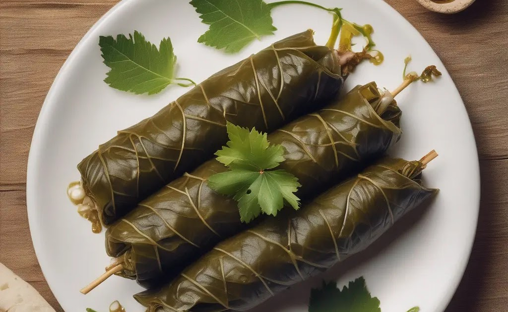

Warak Enab, or stuffed grape leaves, is a dish made by wrapping grape leaves around a filling of rice and meat or vegetables. Often served as an appetizer, it can vary in flavor and preparation across different cultures.
Warak Enab:
Warak Enab: